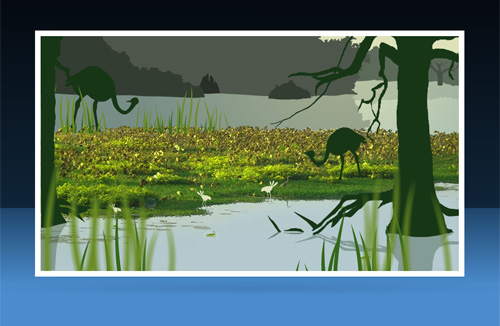

Design & Authoring for Interactive Media
Week 5 - March 1,2017
Echogenesis
Echogenesis is an interactive flash website developed by Bell Brothers. It allows you to explore five natural environments and experience a variety of sound and visual effects as you do so. The site/game was created with the intended purpose of not giving the user a "task" to complete but instead allowing them the freedom and control to roam a digitally made environment freely. I think the art for this site (the multimedia mix of silhoutte and photo) is visually appealing and that it lives up to its intended purpose. The logos, text, and overall set up is user friendly and appealing.
HTML5 Drum Machine

HTML5 Drum Machine allows you to explore musically with different drum machines on its interactive site. There are 5 different kits you can choose from: an acoustic kit, the TR-808, TR-909, the Linndrum, and Elektron’s Machinedrum. You can change the pitch, create 16-step patterns, and save your work for later. There is even an option to export your finished pattern as a WAV file. For a very simple looking site you can do a lot with it lol. I think the color scheme and font choice for this site gives it a very cute, fun, and novelty appearance.